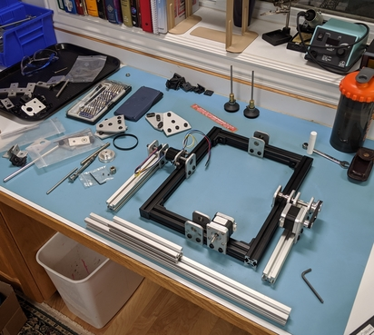

Perplexus Epic -
Computer Controlled Game
Perplexus Epic Overview
I've struggled to solve the Perplexus Epic ball game, so I decided to build a robot to do it for me! The frame is built out of T-slot, and uses two Nema 17 stepper motors to control the roll and yaw. I'm using and Arduino to control the stepper motors. To program the robot I've decided to use GRBL and Candle. This set up makes it easy to program and trouble shoot any issues. This is an on going project and I'm progressing towards finishing the programming of the robot.
I wanted to make the robot modular so that it would be easy to adjust and change things. I have worked with T-Slots (80/20) before on another project and I really like how robust and simple it is.
Perplexus Epic Update